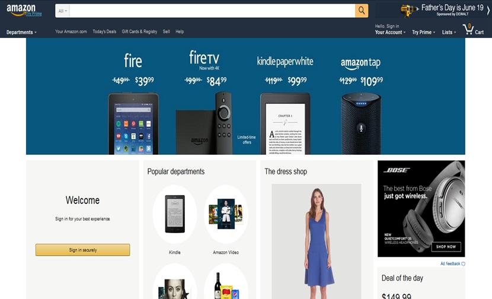

Chapter 1: Introduction to Multimedia
Source: "Multimedia: Making It Work."
Objectives
○ Define common multimedia terms such as multimedia, integration, interactive, HTML, and
authoring and qualify the characteristics of multimedia: nonlinear versus linear content.
○ Describe several different environments in which multimedia might be used, and several different
aspects of multimedia that provide a benefit over other forms of information presentation.
○ Describe the primary multimedia delivery methods—the Internet, wireless, CD-ROM, and DVD—
as well as cite the history of multimedia and note important projected changes in the future of
multimedia.
|
Contents |
|---|
What is Multimedia?
Multimedia is derived from the word “Multi” and “Media”. Multi - Many, Multiple. Media - Distribution tool & information presentation – text,
graphic, voice, images, music and etc.
Multimedia is a combination of text, graphic,
sound, animation, and video that is delivered
interactively to the user by electronic or digitally
manipulated means.
Multimedia is any combination of text, art, sound, animation, and video delivered to you by computer or other electronic or digitally manipulated means.
It is richly presented sensation. When you weave together the sensual elements of multimedia — dazzling pictures and animations, engaging sounds, compelling video clips, and raw textual information — you can electrify the thought and action centers of people’s minds. When you give them interactive control of the process, they can be enchanted.
Multimedia is any combination of text, graphic art, sound, animation, and video delivered by computer or other electronic means.
Multimedia production requires creative, technical, organizing, and business ability.
Multimedia presentations can be nonlinear (interactive) or linear (passive).
Multimedia can contain structured linking called hypermedia.
Multimedia developers produce multimedia titles using authoring tools.
Multimedia projects, when published, are multimedia titles.
Definition of Terms
When you allow an end user — also known as the viewer of a multimedia project — to control what and when the elements are delivered, it is called Interactive Multimedia.
When you provide a structure of linked elements through which the user can navigate, interactive multimedia becomes Hypermedia.
The people who weave multimedia into meaningful tapestries are called Multimedia Developers.
The software vehicle, the messages, and the content presented on a computer, television screen, PDA (personal digital assistant), or mobile phone together constitute a Multimedia Project.
If the project is to be shipped or sold to consumers or end users, typically delivered as a download on the Internet but also on a CD-ROM or DVD in a box or sleeve, with or without instructions, it is a Multimedia Media.
Other terms:
- Browsers – are software programs or tools for viewing content on the Web such as Internet Explorer, Safari, Google Chrome, or Firefox.
- Linear - starting at the beginning and running through to the end of the multimedia project. (Sequential)
- Non-Linear - users are given navigational control and can wander through the multimedia content at will. (Random)
- Platform or Enviroment – The Hardware and software that govern the limits of what can happen here.
Where to Use Multimedia?
- Multimedia in Business 
- Multimedia in Schools
- Multimedia at Home
- Multimedia in Public Places
- Virtual Reality

5 Elements of Multimedia
- Text
- A broad term for something that contains words to express something.
- Text is the most basic element of multimedia.
- A good choice of words could help convey the intended message to the users (keywords).
- Used in contents, menus, navigational buttons
- Graphic
- Two-dimensional figure or illustration
- Could be produced manually (by drawing, painting, carving, etc.) or by computer graphics technology.
- Used in multimedia to show more clearly what a particular information is all about (diagrams, picture).
- A Picture means a thousand words
- Audio
- Produced by vibration, as perceived by the sense of hearing
- In multimedia, audio could come in the form of speech, sound effects and also music score.
- Animation
- The illusion of motion created by the consecutive display of images of static elements.
- In multimedia, animation is used to further enhance / enriched the experience of the user to further understand the information conveyed to them.peech, sound effects and also music score.
- Video
- Is the technology of capturing, recording, processing, transmitting, and reconstructing moving pictures.
- Video is more towards photo realistic image sequence / live recording as in comparison to animation.
- Video also takes a lot of storage space. So plan carefully before you are going to use it.
Interactive Multimedia
Interactive Multimedia is when the user is given the option of controlling the
elements.
Hyper Media
is a combination of hypertext, graphics, audio, video,
(linked elements) and interactivity culminating in a
complete, non-linear computer-based experience.

Linear vs Non-Linear
A Multimedia Project is identified as Linear when:
- It is not interactive
- User have no control over the content that is being showed to them.
Example:
- A movie
- A non-interactive lecture / demo show
A Multimedia Project is identified as Non-Linear when:
- It is interactive
- Users have control over the content that is being showed to them.
- Users are given navigational control
Example:
- Games
- Courseware
- Interactive CD
Authoring Tools
Authoring Tools are use to merge multimedia elements (text, audio, graphic, animation, video) into a project. Designed to manage individual multimedia elements and provide user interaction (if required).
Importance of Multimedia
There are a number of fields where multimedia could be of use. Examples are:
- Business
- Sales / Marketing Presentation
- Trade show production
- Staff Training Application
- Company Kiosk
- Education
- Courseware / Simulations
- E-Learning / Distance Learning
- Information Searching
- Entertainment
- Games (Leisure / Educational)
- Movies
- Video on Demand
- Online
- Home
- IPTV
- Satellite TV
- Games
- Public Places
- Information Kiosk
- Smart Cards, Security
Multimedia Products
- Briefing Products
- Small, straightforward, linear products used to present information quickly and concisely.
- Characteristic of briefing product:
- Short Development Cycle
- Limited Number of Presentations
- Usage of text to present information with limited use of graphic, audio and video.
- Have few navigational controls. (mouse click and button press to move from one page to another)
- Content and the format are suitable for the audience and fulfill the purpose of the presentation.
- Good briefing presentation depends on:
- The understanding of the presented subject.
- Seamless integration of content.
- Consistent layout
- Example:
- Corporate Presentation
- Sales Presentation
- Educational Lectures
- Reference Products
- Often used for answering specific questions or for general browsing of information. (stored on CD/ DVD ROM)
- Characteristic of reference product:
- Used by wide range of user (small – adult)
- Have navigational menu, book marking, searching, printing utility.
- 2 Basic classes of reference product:
- Generalized Content (dictionary/encyclopedia) - Broad treatment of content at a limited depth.
- Detailed Content - Focus on specific area and provide extensive information.
- Good usability and success depends on:
- The developers understanding the body of information and how the end user will want to access it.
- Help function should always available to explain how to access and use the information
- Examples are electronic forms of:
- Encyclopedia
- Dictionaries
- Cookbooks, Historica
- Database Products
- Similar to reference product in a sense that large amount of information are made available to the end user.
- Focus on storing and accessing the actual data (multimedia data such as text, graphic, audio, animation and video)
- Characteristics of Database Products are:
- Manages multimedia data (large data)
- Descriptive finding methods
- Content based search
- Simultaneous access
- Online database
- Relational consistency in data management.
- Examples are:
- Google Search
- Google Earth
- Education and Training Products
- Similar to textbook or training manuals but have added media such as audio, animation and video.
- Make up a significant share of the multimedia market ranging from prekindergarten to postgraduate offerings from technical to corporate training products.
- 2 categories of reference product:
- Instructor Support Products
- Standalone or Self-Paced Products
- Combination Products
- Shares the same characteristics as Reference Product
- Kiosk Products
- A product which is usually stationed at public places and allow the user to find information interactively and also other types of transaction.
- Characteristics of Kiosk Products:
- Limited target users and usage.
- User friendly and easily used by user.
- Fast response.
- Categories of Kiosk:
- Point Of Information
- Provide certain information (example map, timetable etc)
- Point Of Sales System
- Allow users to purchase or make orders
- Example of Kiosk Products:
- Instant Photo Booth
- Banking Kiosk (money deposit, cheque)
- University Information Kiosk
- Entertainment & Games Products
- Most popular
- Shipped in the form of Interactive CD / DVD ROM.
- Characteristics of E & G Products:
- Immersive.
- Requires constant feedback and interaction with the user.
- Challenging and sometimes intriguing for user
- Enabled online play for more than one user experience.
Delivering Multimedia
- Large storage and bandwidth - for delivery and distribution
- CD, DVD and Flash Drive
- Broadband Internet